GT仅事后评分。绿色GT、青色Top20。自动提取，非人工解析真值。
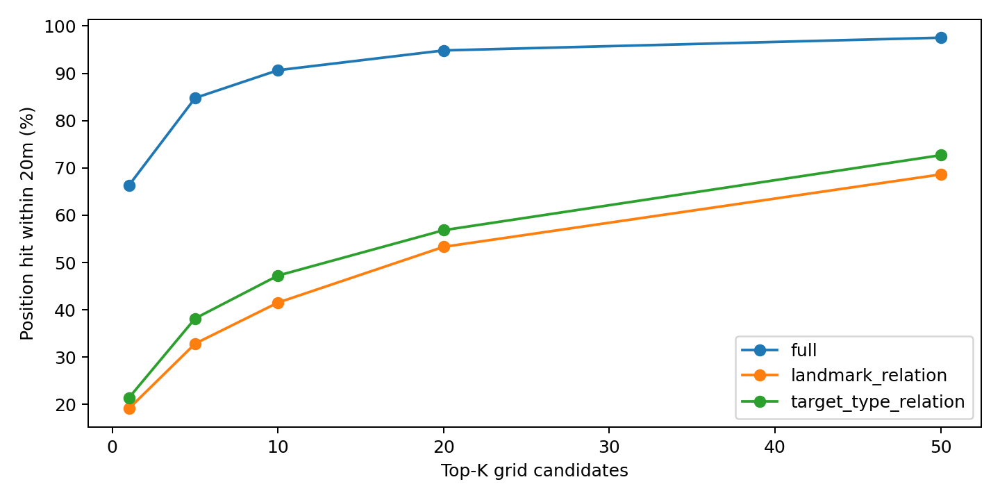
The gray house on Wellington Road to the right of the St. Teresa of the Child Jesus Catholic Church.
精简输入：house; Building; on Wellington Road; to the right of St. Teresa of the Child Jesus Catholic Church
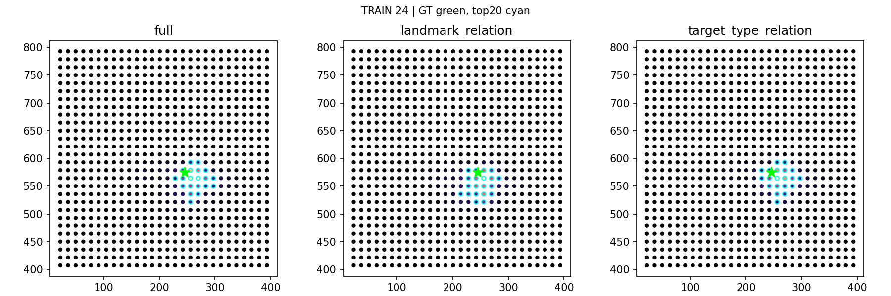
A multicolored blue and white long rectangular building with a light gray roof, that is facing the corner of Celine Grove and willmore Road
精简输入：building; Building; Celine Grove; willmore Road
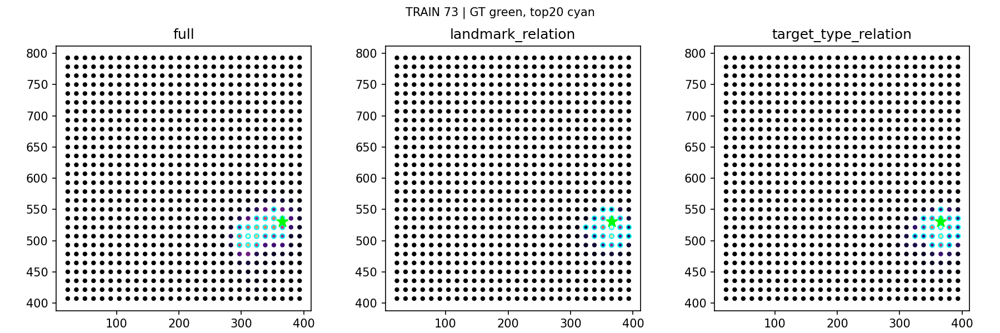
A multicolored brown and white building with a gray roof, fourth from the edge of the map off Willmore Road, that is across from the outline of a car, that is next to a white car
精简输入：building; Building; Willmore Road
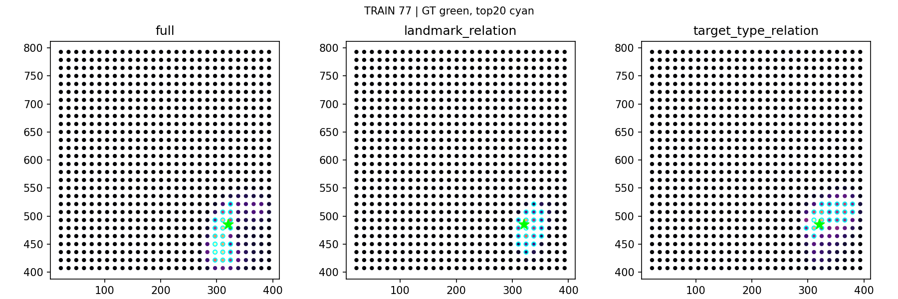
The large gray rectangular building across from the One Stop building and the Gym.
精简输入：building; Building; across from One Stop; the Gym
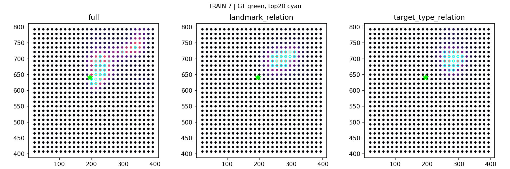
The brick building at the end of Leslie Road that has a gray roof and a gray garage door.
精简输入：building; Building; Leslie Road
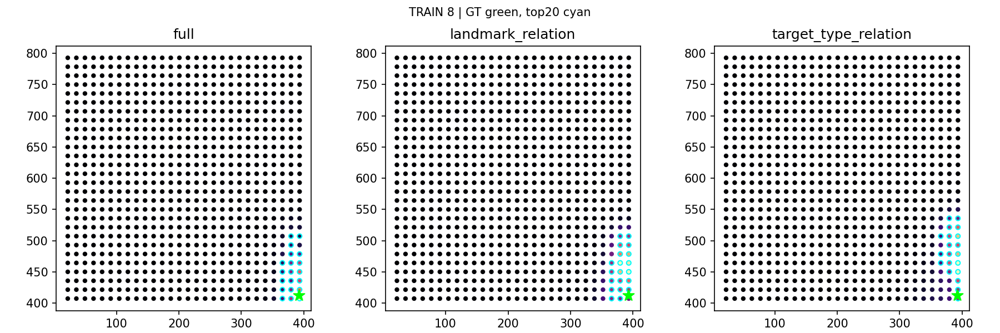
The dark gray building on Leslie Road across from the row of gray houses.
精简输入：building; Building; on Leslie Road
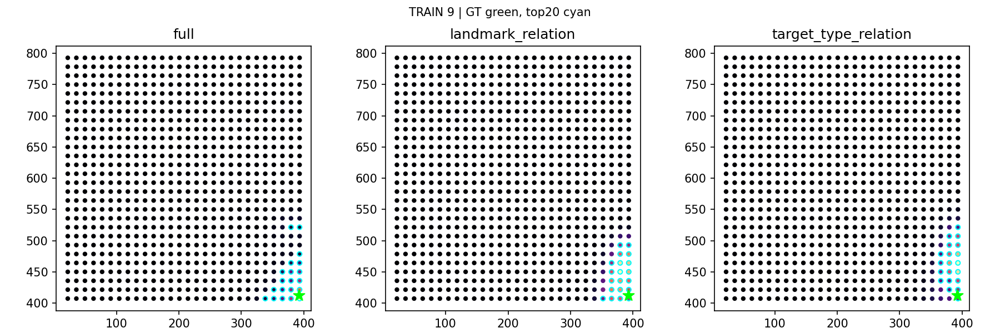
The large blue and white building that goes around the huge parking lot with the The Gym, Nike Factory Store and The Food Warehouse.
精简输入：building; Building; The Gym; Nike Factory Store; The Food Warehouse
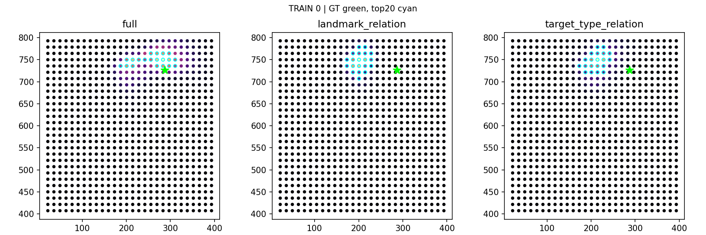
A beige and brown house with a dark gray roof cut off by the edge of the map with a white car in front of it off Grosvenor Road
精简输入：house; Building; Grosvenor Road
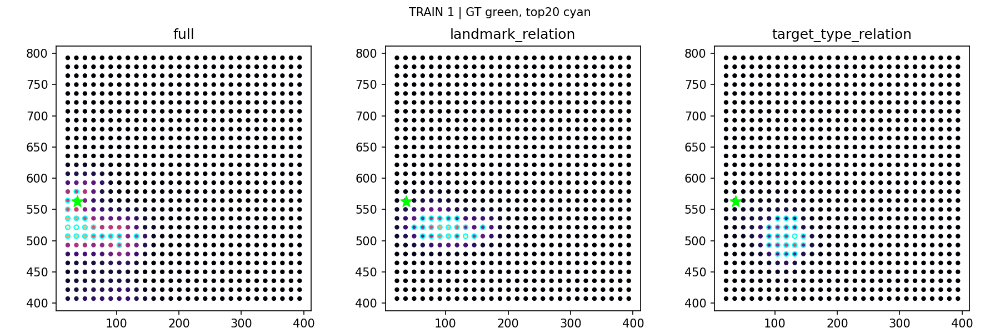
A big building with grey roof situated behind the St Teresa of the Child Jesus Catholic Church. A blue car and a grey car is parked close to the building. The railway track is behind the building.
精简输入：building; Building; behind St Teresa of the Child Jesus Catholic Church
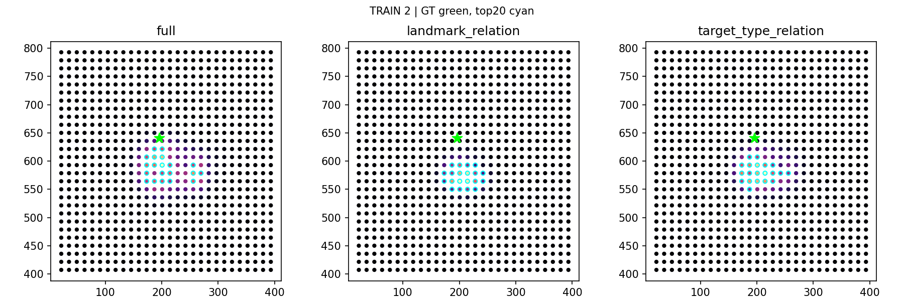
The building that is on the Leslie Road by itself. It looks like a ruin. There are a black and blue car parked closed to it.
精简输入：building; Building; on Leslie Road
The white building on Leslie Road with a driveway that has yellow crisscross painted on it.
精简输入：building; Building; on Leslie Road
The building on Leslie Road across the street from the only red car on Leslie Road.
精简输入：building; Building; on Leslie Road
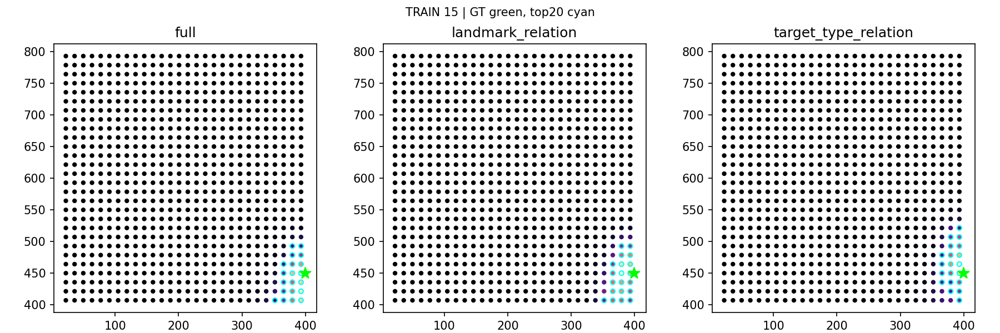